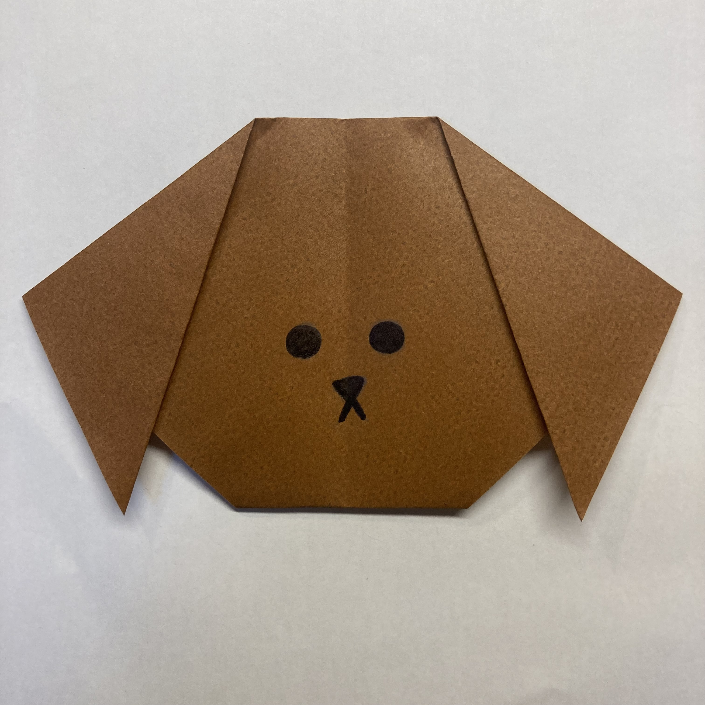
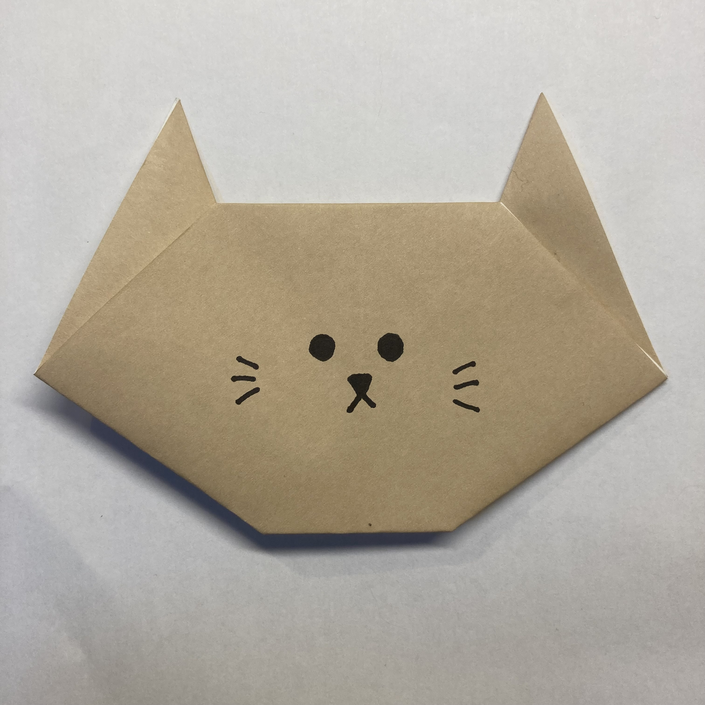
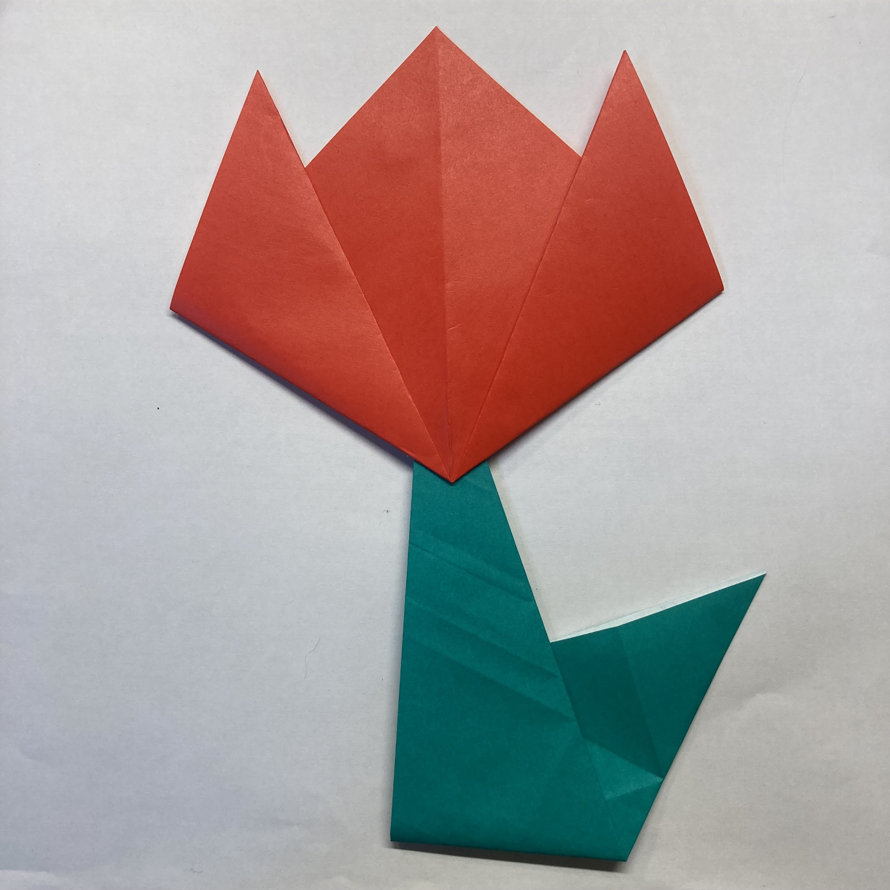
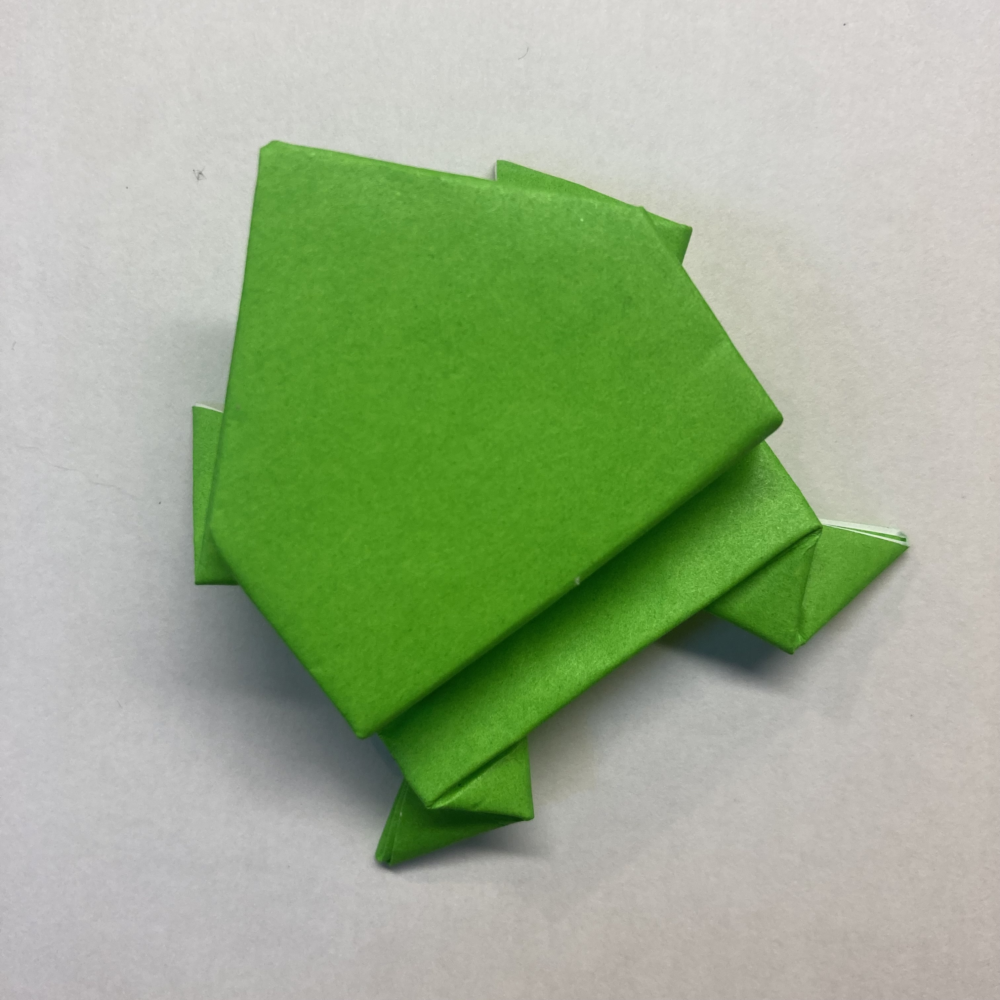
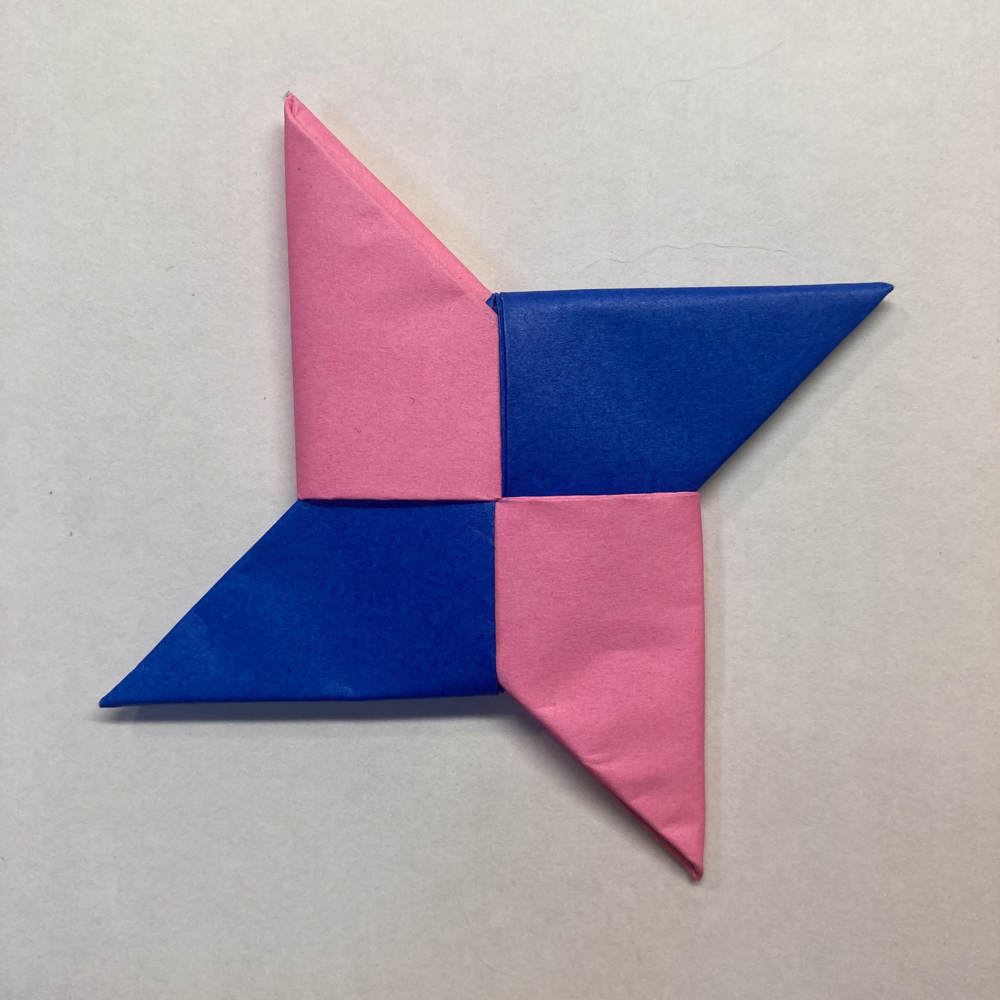
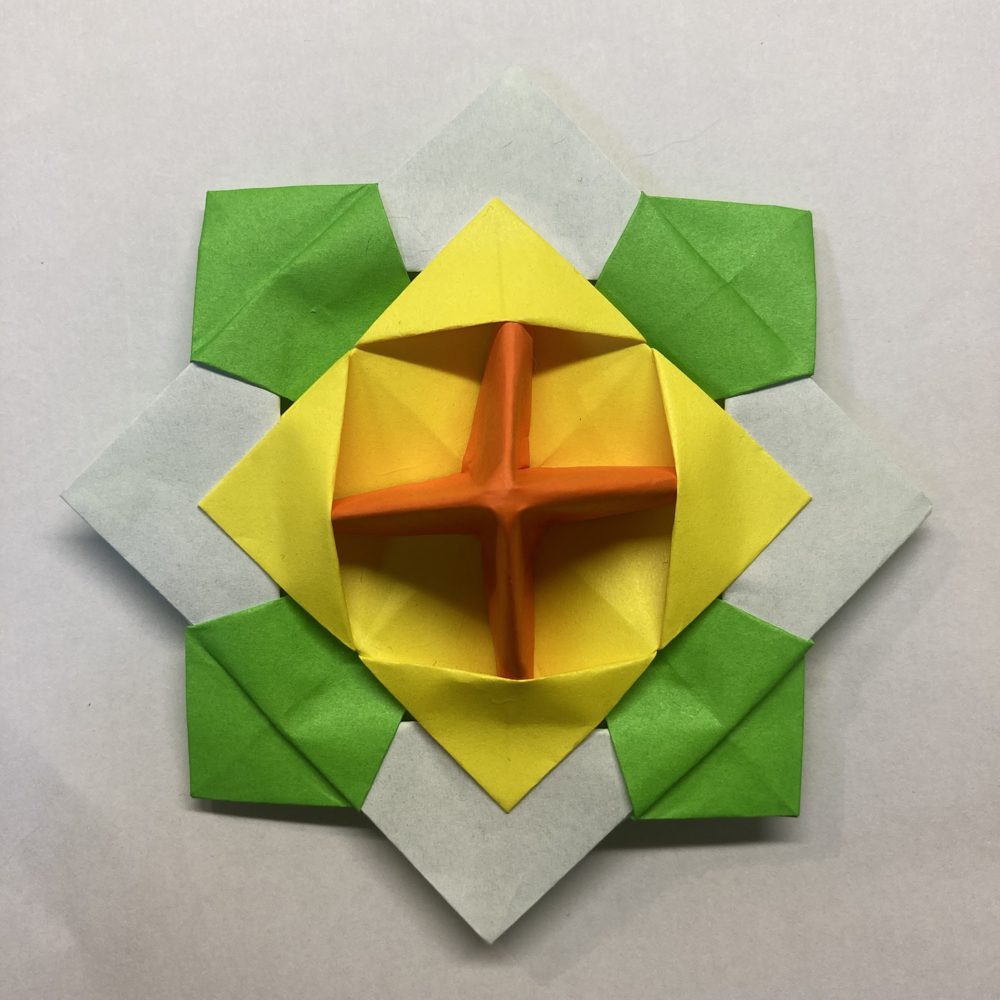
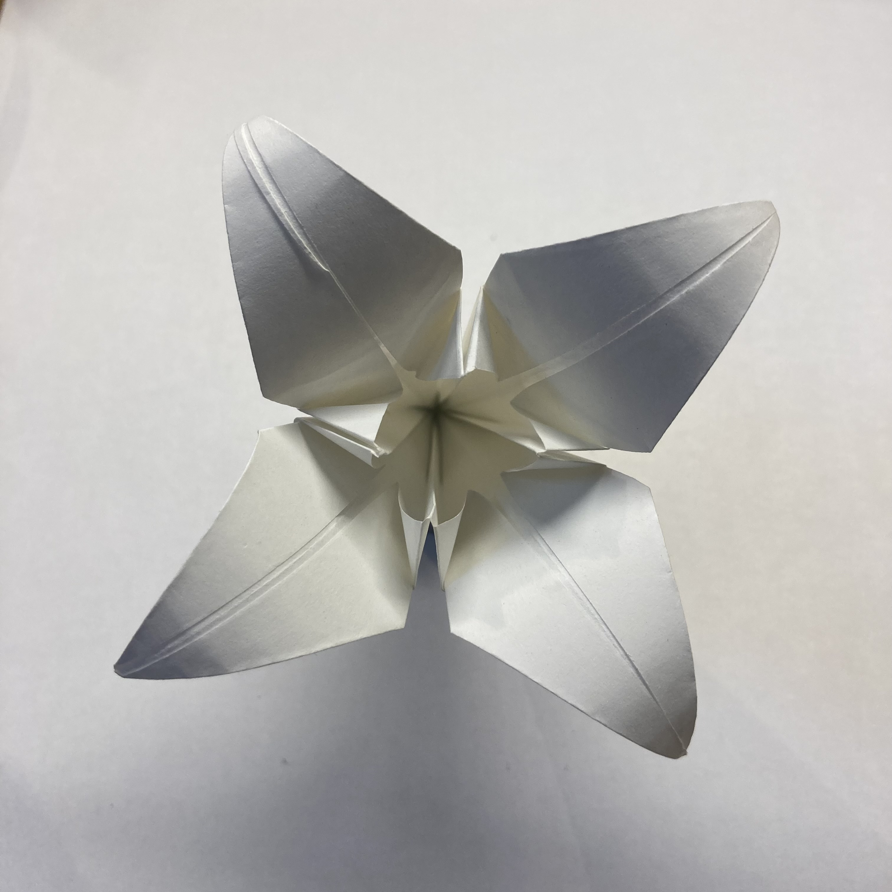

クイズで
折
お
り
紙
がみ
レベル.1
レベル.2
レベル.3
「ワンワン」となく
動物
どうぶつ
は？
A いぬ

「にゃーにゃー」となく
動物
どうぶつ
は？
A ねこ

「
咲
さ
いたー
咲
さ
いたー」という
歌
うた
にもある
花
はな
は？
A チューリップ

日本昔話
にほんむかしばなし
の
一
ひと
つである「〇〇の
恩
おん
返
がえ
し」。〇〇に
入
はい
る
言葉
ことば
は？
A つる
おたまじゃくしの
親
おや
は？
A カエル

忍者
にんじゃ
の
主要
しゅよう
武器
ぶき
である、
投
な
げ
捨
す
て
専用
せんよう
の
手頃
てごろ
な
武器
ぶき
とは？
A しゅりけん

何
なん
らかの
塊
かたまり
を、
軸
じく
を
中心
ちゅうしん
として
回転
かいてん
させて
遊
あそ
ぶ
伝統的
でんとうてき
なおもちゃとは？
A こま

「
思
おも
いやり」などの
花言葉
はなことば
をもつ
花
はな
は？
A チューリップ
「
愛
あい
」「
美
び
」などの
花言葉
はなことば
をもつ
花
はな
は？
A バラ
「
純粋
じゅんすい
」などの
花言葉
はなことば
をもつ
花
はな
は？
A ゆり

独楽。
何
なん
と
読
よ
む？
A こま
日本
にほん
を
象徴
しょうちょう
する
鳥
とり
は？
A つる